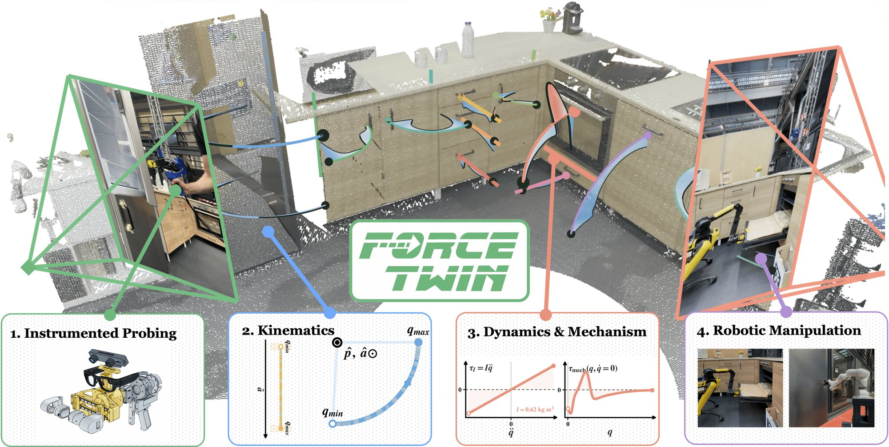
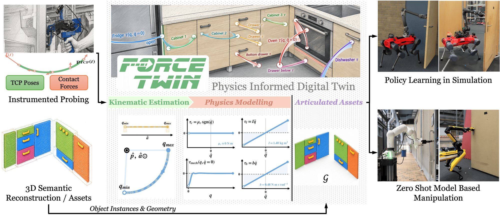
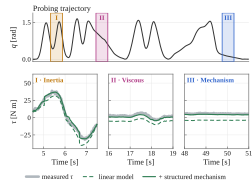
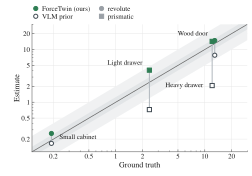

ForceTwin
Physics-informed Digital Twins for Robotic Manipulation from Instrumented Human Interaction

Abstract
Manipulating objects requires understanding not only their motion, but also the physical properties that determine it. For articulated objects, these include inertia, friction, and mechanisms such as springs or door closers, whose effects can vary with configuration and velocity. Such properties are not directly observable from appearance: visually identical doors may require very different effort to manipulate. Existing digital-twin pipelines recover primarily kinematics or assign static physical parameters from visual and language priors, which can yield physically implausible estimates. As a result, state-dependent mechanism dynamics remain unidentified and are not represented in standard asset formats. We present ForceTwin, a system for identifying physics-informed digital twins of articulated objects from instrumented human interaction. A person probes an object using a handheld force-sensing gripper, providing synchronized poses and interaction forces from which we estimate the articulation, parametric dynamics including inertia, Coulomb friction, viscous damping, and a structured neural residual capturing state-dependent mechanism forces. ForceTwin nearly halves the inertial-parameter error of a VLM prior. As a feedforward dynamics model for impedance control on a Spot and a Franka FR3, ForceTwin achieves 87% goal completion across nine object-embodiment pairs, compared with 60% using VLM-prior and 57% using kinematics-only twins, with the largest gains on objects whose strong mechanisms cause both baselines to stall. We further use the identified twins to train whole-body door-traversal policies and deploy them in the real world.
Method
Probe
Handheld gripper with an Aria camera and a 6-axis force/torque sensor. Synchronized tool poses and wrenches.
Kinematics
Screw-axis fit to the tool path. Revolute or prismatic by BIC, refined with a factor graph.
Dynamics
Inertia, Coulomb friction, viscous damping, plus a structured neural residual for springs and closers.
Twin
Model registered to the reconstructed geometry. Exported as USD for simulation or used as robot feedforward.

Interactive twins
- Two doors from the paper: heavy metal door, wooden door with closer.
- Drag the handle. The readout is the handle force the identified model predicts.
- Switch to a default simulator joint to compare.
Kinematics
- 12 axes annotated in a Leica RTC360 scan. Mean with standard deviation.
| Method | Prismatic θerr [°] | Revolute θerr [°] | Revolute dL2 [mm] | Type acc. pris. [%] | Type acc. rev. [%] |
|---|---|---|---|---|---|
| ForceTwin | 1.4±0.2 | 1.5±0.8 | 23±26 | 100.0 | 100.0 |
| MoMa-SG | 1.6±0.8 | 1.7±0.0 | 46±20 | 100.0 | 100.0 |
| OPDMulti | 4.8 | 34.9±29.1 | 143±117 | 100.0 | 54.1 |
Dynamics


Free swing, real against simulated twin
| Object | q0 [°] | Real [s] | ForceTwin [s] | ARE [%] | VLM prior [s] | ARE [%] |
|---|---|---|---|---|---|---|
| Metal door | 45 | 5.6 | 5.9 | 5.4 | 2.1 | 62.5 |
| Metal door | 90 | 8.4 | 8.8 | 4.8 | 2.5 | 70.2 |
| Wood door | 45 | 3.7 | 5.0 | 35.1 | 2.0 | 45.9 |
| Wood door | 90 | 5.0 | 6.0 | 20.0 | 2.4 | 52.0 |
| Macro mean | 16.3 | 57.7 |
Robot manipulation
- Identified dynamics as feedforward of a Cartesian impedance controller. Same robot, controller and 6 s goal for all twins.
- Complete: goal completion [%]. Track: goal-normalized tracking RMSE [%].
- Strong mechanisms (oven, metal door) stall both baselines below 5% completion.

| Object | Mechanism | ForceTwin complete ↑ | track ↓ | VLM prior complete ↑ | track ↓ | Kin. only complete ↑ | track ↓ |
|---|---|---|---|---|---|---|---|
| Spot | |||||||
| Drawer | weak | 88.0 | 9.2 | 95.2 | 34.1 | 90.6 | 38.0 |
| Sliding door | none | 100.0 | 10.5 | 100.0 | 15.4 | 100.0 | 18.5 |
| Wood door | medium | 100.0 | 14.0 | 91.2 | 24.3 | 88.3 | 27.3 |
| Oven | strong | 100.0 | 33.3 | 4.0 | 91.1 | 2.2 | 91.9 |
| Metal door | strong | n/a, forces exceed Spot's actuation limits | |||||
| Franka FR3 | |||||||
| Sliding door | none | 93.7 | 10.5 | 98.7 | 17.2 | 99.3 | 26.9 |
| Drawer | weak | 85.6 | 17.6 | 93.1 | 37.0 | 85.1 | 22.4 |
| Metal door | strong | 81.2 | 24.4 | 1.6 | 91.0 | 1.5 | 91.0 |
| Wood door | medium | 69.8 | 30.3 | 51.7 | 47.7 | 44.0 | 56.0 |
| Oven | strong | 67.6 | 49.7 | 1.8 | 90.8 | 0.9 | 91.6 |
| Overall mean | 87.3 | 22.2 | 59.7 | 49.8 | 56.9 | 51.5 | |
Policy learning
- Identified wood and metal door models replace door randomization in Isaac Lab training.
- Whole-body door-traversal policies deployed on ANYmal with an arm.
- Wood-door policy: 5 of 5 trials on the wood door.

BibTeX
@article{engelbracht2026forcetwin,
title = {ForceTwin: Physics-informed Digital Twins for Robotic Manipulation from Instrumented Human Interaction},
author = {Engelbracht, Tim and Zurbr{\"u}gg, Ren{\'e} and Mittal, Mayank and Hutter, Marco and Pollefeys, Marc and Blum, Hermann and Bauer, Zuria},
journal = {arXiv preprint arXiv:2609.21751},
year = {2026}
}